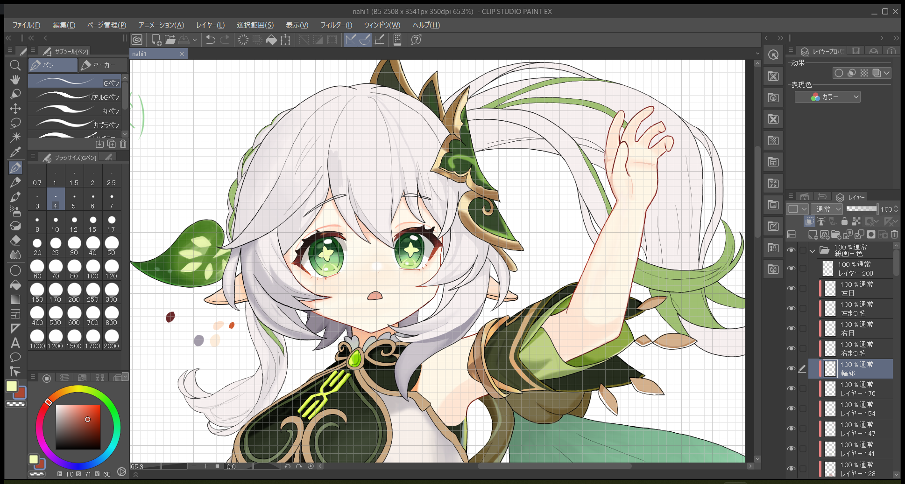
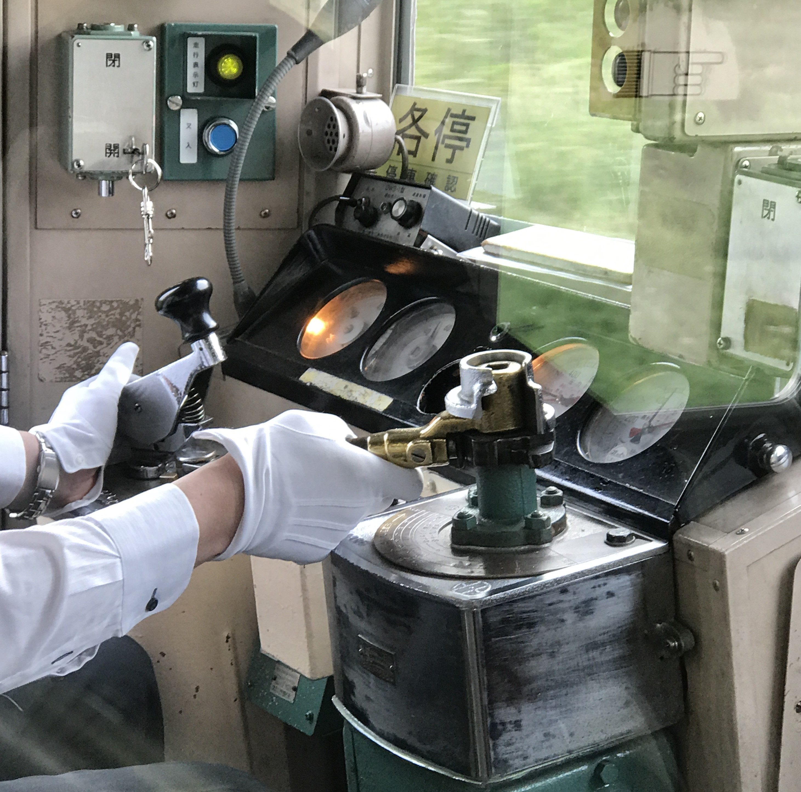
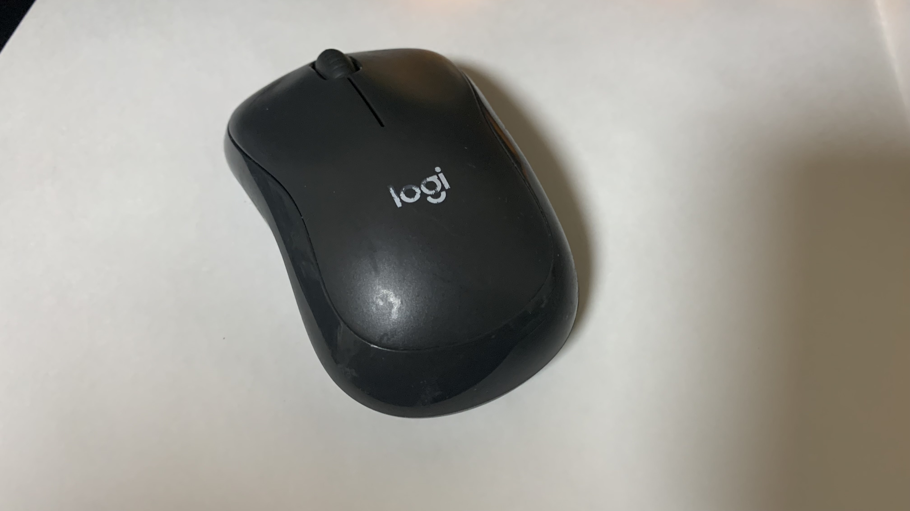
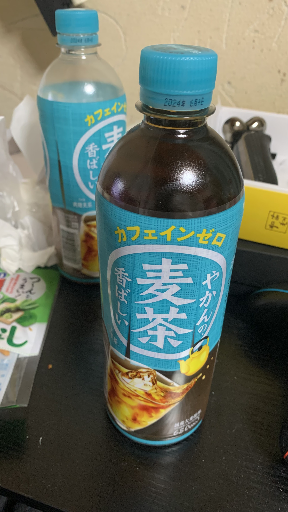

立ヶ瀬／たてがせ
おはこんばんちは。立ヶ瀬と申します。
この「立ヶ瀬の部屋」では、自分の紹介や作品、更新情報などを投稿していきます！
なお、このWebサイトのコードは、授業で学んだことや、先輩などに一緒に考えたことも含まれます。また、参考程度にChatGPTを使用しています。
-
・コンピュータ
-
・ソフト
clip studio paint EX
-
・タブレット
-
・マウス
Logicool Silent Bluetooth Mouse M240GR
クリック音がならない静音設計！ しかも安い！ (2000円程度で買えます)

-
・机の上にあるもの
作者のおすすめ麦茶ベスト３には入るほどおすすめです。味のクセが無いし、飲みやすくて、いつも箱買いしてます笑

-
・机
-
・椅子